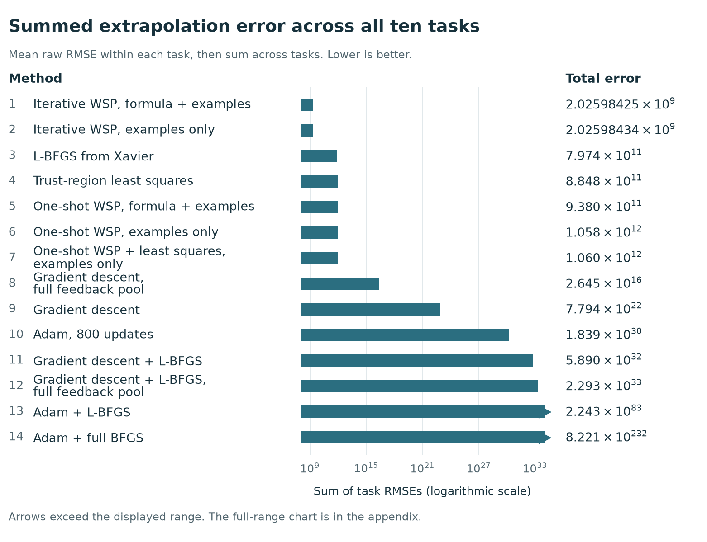
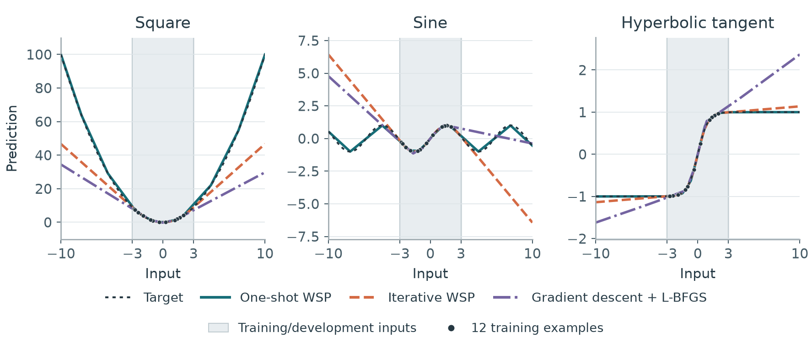

Weight-space programming: writing the weights, then testing the rule
I've been thinking about a gap for years: the universal approximation theorem tells us that suitable neural networks can approximate continuous functions on compact domains arbitrarily well. But how do we actually find the weights? And do those weights continue the right rule outside the examples we showed them?
The theorem does not promise that a particular small network can return every answer exactly, or that any particular optimizer will find the desired solution. That gap is the experiment here. I asked Astra to write the numerical weights of small networks directly, then ran those networks independently on unseen inputs.
That is weight-space programming (WSP). Once the weights are written, the small network performs inference without calling the language model. The results are interesting enough that I'm releasing the code, data, prompts, analysis, LaTeX, and preprint together.
What did we actually compare?
The main study covers ten tasks: square, sine, positive self-power xx, hyperbolic tangent, addition, subtraction, running sum, sorting four numbers, Fibonacci numbers, and triangular numbers. We sweep 29 task-and-architecture pairs, each from three random starts: 87 settings, using networks with 3–50 trainable coefficients.
The architectures are explicit: small multilayer perceptrons with rectified linear activations, residual sorting networks, and recurrent networks. Their training objectives are nonconvex in the weights. Even addition becomes a nonconvex optimization problem when it is represented by a network with a trainable hidden layer.
For the signed continuous tasks, training inputs lie inside [−3, 3], and the outer test uses [−10, −3] and [3, 10]. Positive self-power uses positive inputs. The integer-sequence tests use later indices, including 33–64. The paper gives the exact splits and every architecture.
We compare two forms of WSP, each with examples alone and with the generating formula also supplied:
- One-shot WSP: Astra receives the architecture, initial weights, examples, and intended range, then returns numerical coefficients in one response.
- Iterative WSP: Astra starts with that response and gets up to three revisions using training and development feedback. A revision is retained only if it improves development loss, with training loss breaking ties. Test scores never select the weights.
Backpropagation computes gradients; it is not, by itself, an update rule. Our numerical comparisons include full-batch gradient descent using backpropagation, gradient descent followed by the limited-memory Broyden–Fletcher–Goldfarb–Shanno method (L-BFGS), and additional adaptive and least-squares methods. The fixed-network comparisons share architectures and initial weights. Iterative WSP receives extra development feedback, so we also report gradient controls given the entire feedback pool. Computation and pretrained knowledge are not matched.
Exact outputs are possible in some of these small networks
Both examples-only WSP procedures match every outer-test reference in the same 30 of 87 settings. Plain gradient descent and gradient descent followed by L-BFGS do so in zero settings under the tested budgets. At the specified sufficient sizes, WSP gets all tested addition, subtraction, running-sum, Fibonacci, and triangular-number outputs exactly right.
Here, “exact” means equality with the 64-bit floating-point reference on every output of the tested example. It does not mean “beyond machine precision,” and it is not a proof about every possible input. We also report root mean squared error (RMSE), because two methods can both miss exact equality while having very different numerical accuracy.
For example, on the two-state Fibonacci network, the median outer RMSE across three starts is zero for WSP, about 2.44 × 1010 after plain gradient descent, and 0.0715 after its L-BFGS refinement. That last comparison matters: refinement helps substantially even when it does not reach exact equality.
The aggregate ranking needs its units attached
The plot below ranks all 14 complete optimizer pipelines by summing each task's mean raw extrapolation RMSE across sizes and starts. Iterative WSP has the smallest total in both information conditions. For examples-only WSP, that total falls from about 1.06 trillion to 2.03 billion after iteration.

Those huge numbers need context. Fibonacci contributes 99.8% of the examples-only one-shot total, including errors from narrow recurrent networks that cannot represent the exact recurrence. Positive self-power contributes 78.1% of the iterative total. The ranking is therefore sensitive to target magnitude and severe failures. It is a result for this metric and benchmark, not a universal ordering of optimizers.
A better development fit can give a worse extrapolation rule
This was the most useful surprise. The iterative selector improves development loss by design, but that does not ensure better extrapolation. To compare errors across tasks, scaled RMSE divides each prediction error by the larger of one and the target magnitude before computing RMSE. In the formula-and-examples condition, median scaled outer RMSE falls from 0.0731 to 0.00590 after the first revision opportunity, then rises to 0.227 after the second. A table of final results alone would hide that temporary improvement.

The median scaled extrapolation error for examples-only WSP rises from 0.057 to 0.235 even while its summed raw error falls. Those statements are consistent: a median and a raw sum emphasize different parts of the error distribution.
Looking at the actual functions makes the failure concrete. In one square network, development RMSE improves from 0.396 to 0.0145, but outer RMSE worsens from 1.22 to about 24. The revised weights concentrate all changes of slope inside the feedback interval and extend straight lines outside it. At input 10, the prediction changes from approximately 100 to 46.7.

What if Astra chooses the architecture too?
That is a separate experiment. Thirty new one-shot requests provide input/output pairs and a deployment domain, but no prescribed architecture or target formula. Astra chooses the graph and coefficients from a declared library that supports affine maps, activations, multiplication, recurrence, convolution, and attention. Extrapolation is the primary goal, with coefficient storage, inference memory, and arithmetic as secondary objectives.
28 of 30 proposals are executable; 21 match every original outer-test output. The three sine proposals reach outer RMSE 7.79 × 10−16. Positive self-power produces one valid proposal with RMSE about 16,759 and two invalid proposals, which remain failures in the results.
The operator library matters. Square can use a single multiplication node with zero stored coefficients, and hyperbolic tangent can use its native activation. A zero-coefficient graph still needs a graph description and runtime storage. We report those costs, including logical live tensor memory and scalar arithmetic; we do not claim a globally smallest architecture. These graph-choice trials are not mixed into the fixed-network optimizer ranking.
Why I'm excited, and what comes next
The interesting capability is that a language model can return an executable numerical object: a small network whose weights can be inspected, replayed, and tested without the language model at inference time. On several tasks that object preserves the rule outside the examples. On others, iterative feedback damages the continuation, and the saved weights let us see how.
There is much more to test. Familiar formulas can be recognized from pretrained knowledge, so exact answers alone do not distinguish recall from new inference. Newly composed functions, broader task families, stronger tuning controls, and independent numerical implementations are natural next experiments. This finite benchmark does not establish a solver for every Turing-computable function or a replacement for gradient optimization across deep learning.
I'm putting the work out in the open so other people can inspect those boundaries and extend the experiment. The repository includes the numerical coefficients, original prompts and replies, public construction explanations, recorded revision decisions, scoring code, analyses, figures, and editable paper source.
Read the preprint or explore WSP-for-turing-complete on GitHub.